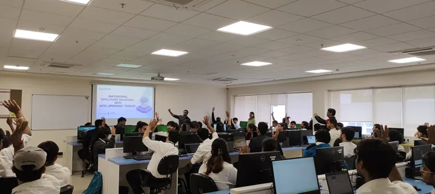

↗ View gallery · 06Making AI deployment hands-on
A practical OpenVINO workshop for 60+ students and faculty, moving from image classification to LLM inference and a basic chatbot API.
Explore the story
The work
Introduced the toolkit architecture and inference across CPUs, GPUs and edge devices. Participants installed OpenVINO, ran the Hello Image Classification demo, explored LLM inference and developed a basic chatbot API.
The contribution
Connected AI concepts to runnable applications on everyday laptops, with live coding, questions and a short quiz. Organized with IEEE SIT Pune, IEEE CEDA Bombay Section – Nagpur Chapter and the Intel OpenVINO Developer Community.
Link to this story